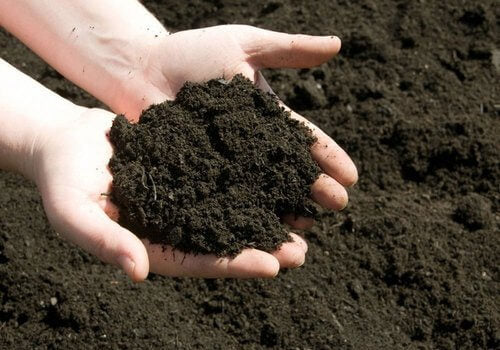

Vermicompost

Vermicompost is a nutrient-rich organic fertilizer produced using earthworms. It improves soil fertility and is widely demanded in international organic farming markets.
Product Type: Organic Fertilizer
Packaging: 25 Kg / 50 Kg PP Bags
Minimum Order: As per buyer requirement
Port of Dispatch: Chennai / Krishnapatnam
Payment Terms: LC / TT
Product Specifications
| Parameter | Value |
|---|---|
| Organic Carbon | 18 – 20% |
| Moisture | 25 – 30% |
| pH | 6.5 – 7.5 |
| Nitrogen | 1.5 – 2% |
Send Enquiry
Email: udayamagro@gmail.com
WhatsApp: +91 9490024994